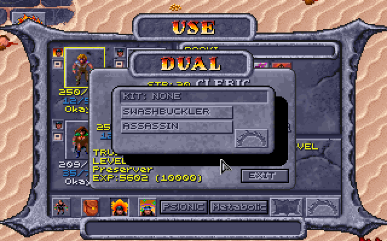
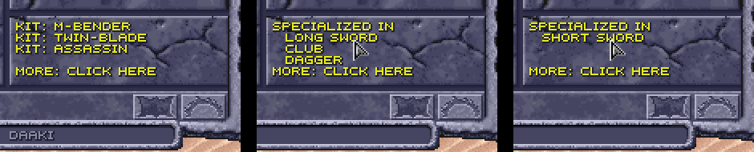
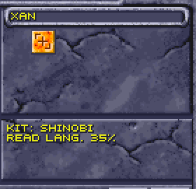
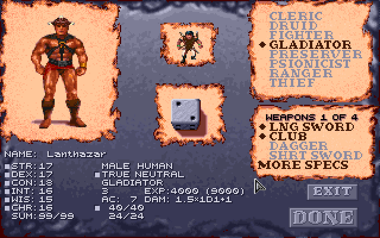
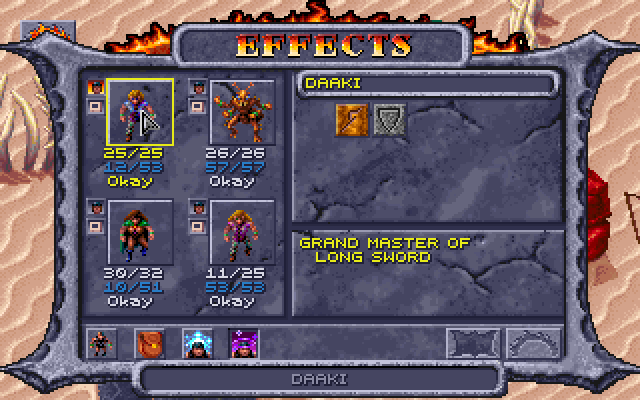

Fighter kits
A fighter starts with a bone long sword, shield, leather chest, arm and leg armour.
| Kit | Gives | Costs | Starts with | Also |
|---|---|---|---|---|
| Myrmidon | with weapon specialization, a second weapon spec at 1st level (+1 to hit, +2 damage, 3/2 attacks a round); both weapon specs go on to mastery at 5th level (+3 to hit, +3 damage) and grand mastery at 9th (+3, +3, the damage die the next greater die size, against large targets too, and one more attack a round) | −4 on saves against charms (Charm Person, Charm Monster, Charm Person or Mammal, Domination, Mass Domination); initiative 2 worse | the fighter's gear, and a plain weapon of its second weapon spec in the left hand in place of the shield (a bow in the missile slot, with arrows; a two-handed weapon in the backpack) | the second weapon spec is picked on the weapon window after DONE (EXIT after one leaves it with one) |
| Sentinel | AC 2 better with a shield in a hand; +2 initiative, from 1st level | −1 on saves against wizards' and priests' spells | the fighter's gear | can't dual to druid or preserver; can't go with the Shinobi |
| Ravager | +1 to hit and damage in melee; a base AC by level: 7 at 1st-2nd, 6 at 3rd-4th, 5 at 5th-6th, 4 at 7th-8th, 3 at 9th-10th, armour bettering it as usual | no missile or thrown weapons (cahulaks are allowed: the game doesn't throw them); no shield; leather armour or none | the fighter's gear, with a second of its weapon in place of the shield (none if the weapon takes both hands) | the dice log shows its bonus as +1 Ravager; can't go with the Grove Warden |
Gladiator kits
A gladiator starts with a bone long sword, a club in the off hand, leather arm armour.
| Kit | Gives | Costs | Starts with | Also |
|---|---|---|---|---|
| Arena Champion | with a shield in a hand: +1 to hit and damage in melee, and AC 1 better, from 1st level | −1 to hit in melee with no shield | a shield in place of the off-hand club | can't dual to druid or preserver; can't go with the Shinobi |
| Twin-blade | with the two-weapons rule, no penalty for two weapons in light armour, leather or none (others: −2 main hand, −4 off hand) | no shield; no two-handed weapon, bows and the staff sling among them (a half-giant may hold one in one hand, with the half-giants' rule); never cahulaks, a half-giant's too | the gladiator's gear: its long sword and club are its two weapons | in heavier armour, the usual penalty; can't go with the Healer |
| Brute | +2 to hit and damage with a two-handed melee weapon | two-handed melee weapons only (a half-giant may add a shield); missile weapons, but not as a weapon spec | a two-handed weapon (a bone great axe without weapon specialization); the club is left behind | a bow or staff sling, two-handed as it is, doesn't get the +2; can't dual to psionicist (an air cleric can: the cahulaks are two-handed); can't go with the Shinobi or Lifebinder |
Ranger kits
A ranger starts with a bone long sword, bow and arrows, leather chest and arm armour.
| Kit | Gives | Costs | Starts with | Also |
|---|---|---|---|---|
| Stalker | +2 movement in a fight; +15 hide in shadows and move silently, and hiding not halved indoors (with hiding to backstab) | leather armour or none | the ranger's gear; with fuller starting gear, a cloak | can't dual to thief, and a thief (any thief kit or none) who duals to ranger can't take it: its hiding would add to a thief's own |
| Justifier | with weapon specialization, its expertise with the bow and its chosen weapon spec becomes specialization: +1 to hit, +2 damage (SPECIALIZED IN on the Effects screen); with the two-weapons rule, no penalty for two weapons in any armour (another ranger's is in light armour only) | one 1st-level priest spell slot from 10th level, in place of a ranger's slots, cast at the ranger level less 9 (1st at 10th) | the ranger's gear | WIS gives it no bonus slots; can't dual to cleric |
| Seeker | priest spell slots in place of a ranger's: one 1st-level slot at 6th level, two at 7th, and a 2nd-level slot at 8th, two at 9th, and a 3rd-level slot at 10th; cast at the ranger level less 5 (1st at 6th, 5th at 10th; a ranger's: less 7), so 2nd-level spells from 8th and 3rd-level from 10th | its sphere's weapon limits, as a cleric of that sphere's (air: missile and thrown weapons, daggers, cahulaks; earth: stone, obsidian, metal, wood; fire: obsidian; water: bone, wood), but it keeps the bow | the ranger's gear, its long sword of a material its sphere allows | WIS gives it no bonus slots; can't dual to cleric |
Thief kits
A thief starts with a bone long sword, sling, leather chest armour.
| Kit | Gives | Costs | Starts with | Also |
|---|---|---|---|---|
| Swashbuckler | a warrior's THAC0: 21 less its level (20 at 1st, 11 at 10th, 8 at 13th) | −10 to every thief skill | the thief's gear | can't dual to fighter, gladiator or ranger; can't go with the Crusader, Battle Mage or Mind Warrior (a warrior's THAC0 twice over) |
| Assassin | hiding in shadows not halved in daylight; a backstab one step deadlier: ×3 at 1st-4th level, ×4 at 5th-8th, ×5 at 9th-12th, ×6 from 13th (a thief's ×2 to ×5) | −15 pick pockets and open locks; light armour only, after changing class too | the thief's gear; with fuller starting gear, a cloak | |
| Shinobi | preserver spells: one 1st-level slot at 6th level, two at 7th, and a 2nd-level slot at 8th, two at 9th, and a 3rd-level slot at 10th; then 3 2 1 at 11th, 3 2 2 at 12th and 3 3 2 1 at 13th, a 4th-level slot, as The Complete Ranger's Handbook's Seeker table goes on; cast at the thief level less 5 (1st at 6th, 5th at 10th, 8th at 13th), in light armour too; one spell learnt at each level up from 6th, from its own 21 (the list; a 4th-level one at a level up from 13th, with its slot, or sooner from a scroll, to cast from 13th); one of its own learnt from a scroll too, if it first reads it (a d100 against its read languages) and then, with the rule for INT on, learns it (INT's chance): a failed roll uses the scroll up | no spell but its own from a scroll; dagger, short sword, quarterstaff, chatkcha, sling, staff sling and bow only; light armour only (after changing class too); no shield | a bone short sword in place of the long sword; with fuller starting gear, a cloak | can't dual to preserver; can't go with the Arena Champion, Sentinel or Brute |
Preserver kits
A preserver starts with a quarterstaff and sling, and picks two 1st-level spells.
| Kit | Gives | Costs | Starts with | Also |
|---|---|---|---|---|
| Scholar | a spell slot more at each spell level it has slots at, from 1st level (2 at 1st where a preserver has 1); a spell more learnt at each level up (CHOOSE A SPELL comes up twice), and one more for each level when it is made | −1 to hit (THAC0 1 worse) | the preserver's gear | |
| Battle Mage | a warrior's THAC0 (21 less its level); a spell still cast after being hit earlier in the round; a d6 hit die; light armour (leather, or none) worn, and spells cast in it; with weapon specialization, expertise in one weapon spec of its choice (long sword, club, dagger, short sword, mace, axe or pick), whose weapons it may use as well as a preserver's own, at 3/2 attacks a round, 2 from 7th level | one fewer spell slot at each spell level (none at 1st level); nothing in the off hand | with weapon specialization, a plain weapon of its chosen weapon spec in place of the quarterstaff | its weapon spec is chosen on the weapon window after DONE (the long sword for an EXIT); can't dual to fighter, gladiator or ranger; can't go with the Swashbuckler, Crusader or Mind Warrior |
| Arcanist | in a fight, casts two preserver spells each turn instead of one (its first doesn't end the turn; being hit still stops the second) | a d3 hit die (a preserver's is a d4) | the preserver's gear | its hit die is rolled again when the kit is chosen or taken back on the creation screen |
Cleric kits
A cleric starts with a shield, leather chest and arm armour, a club in the backpack.
| Kit | Gives | Costs | Starts with | Also |
|---|---|---|---|---|
| Elementalist | a second sphere: its spells (cast at its cleric level, known from the start) and its weapons as well as its own sphere's | spell slots a level behind (a 7th-level Elementalist has a 6th-level cleric's), but at least 1 at each spell level a cleric of its level casts (1 at 1st level) | the cleric's gear | the second sphere is chosen on the CLERICAL SPHERE list after the kit is taken (or on the kit menu after DUAL) |
| Healer | the sphere of the cosmos: the spells every druid casts and no cleric, known from the start and cast at its cleric level (4th level: Abjure, Cloak of Bravery, Cloak of Fear, Cure and Cause Serious Wounds, Free Action, Neutralize Poison, Poison, Protection from Evil 10' Radius; 5th: Cure and Cause Critical Wounds, Dispel Evil, Raise Dead, Slay Living; 6th, with the new priest spells: Heal, Harm, Restore Youth); Cure Light, Serious and Critical Wounds heal 1 more a die (+1, +2, +3) | the water sphere only; no weapon in the off hand (a shield is fine) | the cleric's gear (its club in hand, with fuller starting gear) | taken on the KIT page with WATER marked (Choosing a kit); after DUAL, offered to a water cleric only, and not to one who was a ranger of air, earth or fire; a Healer who changes class to a ranger is a water one (the sphere menu says WATER ONLY); can't go with the Twin-blade |
| Crusader | a warrior's THAC0 (21 less its level); a warrior's extra attacks in melee: 3/2 a round from 7th level; with weapon specialization, expertise in one melee weapon spec of its choice (of those its class can use) at 3/2 attacks a round, 2 from 7th level | one fewer spell slot at each spell level (none at 1st level) | the cleric's gear | its weapon spec is chosen on the weapon window after DONE (the long sword, or its sphere's first, for an EXIT); can't dual to fighter, gladiator or ranger; can't go with the Swashbuckler, Battle Mage or Mind Warrior |
Druid kits
A druid starts with a club and sling.
| Kit | Gives | Costs | Starts with | Also |
|---|---|---|---|---|
| Grove Warden | AC 1 better for every 3 druid levels: 1 at 3rd, 2 at 6th, 3 at 9th, 4 at 12th | no metal weapons | the druid's gear | can't dual to gladiator, and a gladiator who duals to druid can't take it (its AC would add to a gladiator's own); can't go with the Ravager |
| Lifebinder | Cure Light, Serious and Critical Wounds heal a d8 more, Blood Flow a d6 | blunt weapons only (club, mace, quarterstaff, sling, staff sling) | the druid's gear | the dice log notes the extra die; can't go with the Brute |
| Wanderer | resists fire and cold as the Resist Fire and Resist Cold spells do: +3 on saves against fire and cold spells, and half the damage of a spell that is all fire or all cold | AC 1 worse | the druid's gear |
Psionicist kits
A psionicist starts with a club, bow and arrows, leather chest armour.
| Kit | Gives | Costs | Starts with | Also |
|---|---|---|---|---|
| Mind Bender | telepathy powers (the defence modes too) cost 2 PSP less | psychokinesis powers cost 2 PSP more | the psionicist's gear | the 2 counts both to use a power and to keep it up each round, never below 1 (a power with no upkeep still has none) |
| Mind Warrior | a warrior's THAC0 (21 less its level); a warrior's extra attacks in melee: 3/2 a round from 7th level; with weapon specialization, expertise in one melee weapon spec of its choice (of those its class can use; a thri-kreen the chatkcha too, at 3/2 throws a round, 2 from a warrior class's 7th level, and one more as every thri-kreen) at 3/2 attacks a round, 2 from 7th level | a tenth fewer PSP, the tenth rounded down (25 becomes 23) | the psionicist's gear | its weapon spec is chosen on the weapon window after DONE (the club for an EXIT; a thri-kreen's the chatkcha); its PSP stay a tenth fewer even with the kit asleep after a change of class; can't dual to fighter, gladiator or ranger; can't go with the Swashbuckler, Crusader or Battle Mage |
| Kineticist | psychokinesis powers cost 2 PSP less | telepathy powers (the defence modes too) cost 2 PSP more | the psionicist's gear | as the Mind Bender's, the other way round |
Multiclass kits
A character of two or three classes taken at once may take a kit if its race and classes have one, and only that race may: a dwarf fighter/thief has the Ghetto Fighter and Wayfinder, a half-elf fighter/thief the Shadowblade and Military Scout, a halfling fighter/thief the Poisoner, a thri-kreen druid/fighter/psionicist (all three) the Wasteland Seer. "Under the open sky" means an outdoor map, or open ground outside the buildings on a city map.
| Kit | Race and classes | Gives | Costs | Starts with | Also |
|---|---|---|---|---|---|
| Battle Dancer | elf cleric/fighter | a dance as each fight starts: a d20 against DEX − 4 (the Dancing proficiency's check at −4; a natural 20 always fails); at DEX − 4 or under, +1 to hit, to damage and to AC for that less the roll in rounds (at least 1), ending with the fight if that comes first (each fight, and each of the arena's waves, dances anew); with the two-weapons rule, no penalty for two weapons in light armour (leather or none) | long swords and bows only (but any long sword or bow, whatever its cleric's sphere allows), so no cahulaks; no shield; over it, it stumbles: −1 to hit, to damage and to AC for 1d8 rounds | a second long sword in the left hand, in place of the shield; with fuller starting gear, a bow and arrows if it has no missile weapon | its weapon spec is the long sword if none is picked; the dice log shows the dance's roll and its end |
| Shadowblade | half-elf fighter/thief | +10 hide in shadows, +5 move silently; with the stealth rule, tries to hide in shadows even with an enemy right beside it | −10 pick pockets; no shield; light armour only | its classes' gear, without the shield | |
| Military Scout | half-elf fighter/thief | under the open sky, +10 to find/remove traps, move silently, hide in shadows and climb walls, +2 initiative, and +1 to hit with a bow, sling or staff sling; hiding in shadows not halved in daylight | under a roof, −5 to the same four skills; never backstabs (attacking from behind still gives +2 to hit) | its classes' gear | the panel's and the dice log's numbers follow where it stands |
| Wilderness Avenger | half-elf druid/fighter | +1 to hit and damage against anything, melee or missile; Cause Light, Serious and Critical Wounds do 1 more a die (+1, +2, +3); hides in shadows and moves silently as a ranger does, but at 5 a level of its best class (lower than a ranger's table), with its race's and DEX's adjustments | no healing spells: never knows Cure Light, Serious or Critical Wounds, Blood Flow, Heal or Water of Life | its classes' gear | with the stealth rule, its hiding gives an attack from behind (+2 to hit), never a backstab, as a ranger's does |
| Rescuer | half-elf cleric/ranger | Cure Light, Serious and Critical Wounds heal 1 more a die (+1, +2, +3); +2 movement in a fight | attacking from behind gives +1 to hit, not +2; no shield | its classes' gear, without the shield | the dice log says "from behind (Rescuer)" |
| Ghetto Fighter | dwarf fighter/thief | +1 to hit and damage with a dagger in melee; with the two-weapons rule, no penalty in the main hand and −2 in the off hand (others: −2 and −4); +5 pick pockets and hide in shadows | −5 find/remove traps; −1 to hit with anything but a dagger (melee, missile or unarmed); no shield | its classes' gear, without the shield, with a dagger in its hand (whatever its weapon spec) | its weapon spec is the dagger if none is picked; DEX's adjustment still applies to the two-weapons penalty |
| Wayfinder | dwarf fighter/thief | +10 hide in shadows and move silently; Path-finder: while it's up (Okay), every party member has +1 initiative and +1 Move in a fight | −10 pick pockets; while it's down (stunned, out cold, dying, dead, animated or petrified) and no other Wayfinder is up, every party member has −1 initiative and −1 Move in a fight | its classes' gear | the dice log's initiative lines say "Wayfinder's Path-finder" or "Wayfinder down" |
| Spellarcher | half-elf fighter/preserver | arrows it shoots from a bow are 1 better and at least +1 (a plain arrow +1, an Arrows +1 +2...), so they hurt what only magic weapons hurt and do 1 more damage. Spell arrows: a button on the USE screen (in the row where Turn Undead and Pick Pockets go) for each touch spell it knows: Burning Hands, Chill Touch, Shocking Grasp (1st level), Vampiric Touch (3rd). Outside a fight, with its quiver empty, a click uses a slot of that level for 5 arrows a preserver level in the quiver, with the spell's own cast sound as they are made, each casting the spell on what it hits at its preserver level; with the same spell's arrows in the quiver, as many more are added to them (with anything else in the quiver, nothing is made and no slot used). They stay in the quiver until shot or faded, as a Flame Blade stays in the hand: no taking them out ("Item grafted on") and nothing put in their place. Slots are the only limit; they're worth nothing and fade at the next rest | its weapon spec is the bow, and only the bow (the weapon window offers nothing else); light armour only, and like any multiclass preserver it casts nothing, nor weaves spell arrows, while it wears armour | a bow and arrows | sling stones and other missiles as they are |
| Titan Mind | half-giant fighter/psionicist | psychometabolism powers cost 2 PSP less | telepathy powers (the defence modes too) cost 2 PSP more | its classes' gear | as the Mind Bender's: to use a power and to keep it up, never below 1 |
| Poisoner | halfling fighter/thief | every melee weapon hit poisons (not a shot or a throw): the monsters' own poison (as a giant spider's bite), a save against paralysis/poison/death or 10 damage | its weapon spec the dagger or the short sword only (the weapon window offers no other); light armour only | its classes' gear, with one of its weapon spec (a dagger, or a short sword if that is picked) in each hand (its long sword made one, its shield left behind) | its weapon spec is the dagger if none is picked; the dice log shows the save as "vs Poison (10 damage)" |
| Spirit Caller | halfling cleric/psionicist | under the open sky, its cleric spells are cast 2 levels higher (duration and damage) | under a roof, 1 level lower (no lower than 1) | its classes' gear | the spells it may cast and its slots are its own level's |
| Wasteland Seer | thri-kreen druid/fighter/psionicist | under the open sky, its druid spells are cast 2 levels higher (duration and damage), and its psionic powers cost 2 PSP less | under a roof, its druid spells 1 level lower (no lower than 1), and its powers 1 PSP more | its classes' gear | as the Spirit Caller's; the PSP counts both to use a power and to keep it up, never below 1 (a power with no upkeep still has none) |
| Wild Fury | mul druid/fighter | Wild Fighting as each fight starts: a d20 against CON − 4 (the proficiency's check at −4; a natural 20 always fails); at CON − 4 or under, 1 more attack a round in melee and +3 damage (melee or missile) for the fight, checked anew in each fight (each of the arena's waves too) | over it, −3 to hit and AC 3 worse (no worse than 10) for the fight | its classes' gear | the dice log shows the check |
A thief skill a kit lowers never goes below 0. The kits start with their classes' gear, fitted as other kits' is (Starting gear). A multiclass character can't change class, so these kits rule nothing else out.
Choosing a kit
The kit is chosen on the creation panel's KIT page, opened with KITS, the button at the end of the panel: under the psionic disciplines for a fighter, gladiator, preserver, psionicist or thief; under the clerical spheres for a cleric, druid or ranger. NO KIT, the first row, is what a new character has. As with the clerical spheres, the rows not chosen are greyed: click the marked row to take it back, then click the kit you want. A few names are shortened to fit the panel (CHAMPION, SWASHBUCK, ELEMENTAL, WARDEN, BATTLMAGE, M-BENDER, M-WARRIOR, B-DANCER, SHADOWBLD, M-SCOUT, W-AVENGER, G-FIGHTER, SPELLARCH, S-CALLER, WASTE SEER). A multiclass character with kits finds KITS where its classes put it: under the clerical spheres if one class has them, else under the psionic disciplines. Choosing another class puts the kit back to none; a new roll of the die keeps it. The Effects screen names the kit (KIT: RAVAGER), as does the Loader's Characters tab.
EDIT on a party member (its portrait's menu) opens the screen with its kit, and while its classes and kit stay the same, DONE keeps its weapon specs without asking again (a new name, a new roll of the die); choosing another class takes the kit back, and DONE then asks for the weapon specs as for a new character, as it does after another kit is chosen.
The Healer is a water cleric's: its row is greyed unless WATER is the sphere marked (take back the game's AIR and mark WATER, then open KITS). Taking WATER back afterwards takes the Healer back with it, as choosing another class does.
The Elementalist chooses its second sphere on the creation panel's CLERICAL SPHERE list: once the kit is taken (KITS, then ELEMENTAL), its own sphere marked, the other spheres stay in use, and a click on one marks it as the second; a click on it again takes it back, and taking back its own sphere takes back both. The Loader's Characters tab names it (Kit: Elementalist (and water)). Its second sphere's spells are known from the start, as its own sphere's are (a priest knows every spell of its spheres from the start: the game marks them when the character is made, and again when a human changes class, not at a level up).
With its chosen weapon spec the Battle Mage attacks at expertise's rate by its preserver level; with any other weapon, as a preserver does. Its light armour holds whatever the class restrictions say of a preserver. Without weapon specialization it has no weapon spec, only a preserver's weapons.
The game rolls a new character's hit points and works out its PSP when a class is clicked, before a kit can be chosen, so choosing or taking back a kit with a die or PSP of its own (Battle Mage, Arcanist; Mind Warrior) rolls the hit points and works out the PSP again, and the screen shows the new numbers.
Starting gear
The game hands a new character its class's gear (named above each class's table) when DONE is clicked. With Kits ticked, the Loader fits that gear to the kit while the character is new, as each table's Starts with says: a weapon or shield the kit forbids is swapped or taken away, and a kit with a weapon spec of its own gets a plain weapon of it. The dice log says what it changed (T'Jun starts with a plain bone axe for the Battle Mage's weapon spec, in place of the Quarterstaff). Fuller starting gear adds more on top.
The kits in play
- Shown everywhere. The dice log and the Loader show each kit's part: a Ravager's to-hit and damage, a Sentinel's initiative and saves, a Stalker's hiding, the THAC0 for each weapon, a kit's hit die on the hit point lines.
- Hit dice. The Battle Mage's and Arcanist's are rolled on the creation screen and at every level up.
- A warrior's THAC0 is the game's own for a fighter, where it is better than the class's. It and the Scholar's −1 are in the THAC0 the game keeps for the character (View Character's, the attack's), worked out when the character is made and at each level up.
- Spell slots are the game's own wherever it counts them (resting, the spell lists, the Loader's Spells tab). WIS's bonus slots count for the Crusader and Elementalist as for a cleric (a preserver, Scholar or not, has none), not for the Seeker's and Justifier's own tables.
- Casting level. A kit's casting level is the one a spell's duration and damage take, and half of it (rounded up) is the highest spell level it may cast (the Seeker's, Justifier's and Shinobi's are in their tables above; a plain ranger's: Rangers' casting level).
- Casting when hit. The Battle Mage alone still casts after being hit in the round (the rule).
Kits' spell slots
The kits that change spell slots, by the level of the kit's class (spells of 1st to 6th level), with AD&D's class tables on, to the highest level each class reaches under the XP cap (a preserver and a cleric 11th, a druid 12th, a ranger 10th, a thief 13th; a blank means the class has no level there, and — no slot yet at that level). The druid has no kit that changes its slots; it is here, as the cleric is, to set the kits beside:
| Level | Preserver | Scholar | Battle Mage | Cleric | Elementalist | Crusader | Druid | Justifier (ranger) | Seeker (ranger) | Shinobi (thief) |
|---|---|---|---|---|---|---|---|---|---|---|
| 1 | 1 | 2 | — | 1 | 1 | — | 1 | — | — | — |
| 2 | 2 | 3 | 1 | 2 | 1 | 1 | 2 | — | — | — |
| 3 | 2 1 | 3 2 | 1 | 2 1 | 2 1 | 1 | 2 1 | — | — | — |
| 4 | 3 2 | 4 3 | 2 1 | 3 2 | 2 1 | 2 1 | 3 2 | — | — | — |
| 5 | 4 2 1 | 5 3 2 | 3 1 | 3 3 1 | 3 2 1 | 2 2 | 3 3 1 | — | — | — |
| 6 | 4 2 2 | 5 3 3 | 3 1 1 | 3 3 2 | 3 3 1 | 2 2 1 | 3 3 2 | — | 1 | 1 |
| 7 | 4 3 2 1 | 5 4 3 2 | 3 2 1 | 3 3 2 1 | 3 3 2 1 | 2 2 1 | 3 3 2 1 | — | 2 | 2 |
| 8 | 4 3 3 2 | 5 4 4 3 | 3 2 2 1 | 3 3 3 2 | 3 3 2 1 | 2 2 2 1 | 3 3 3 2 | — | 2 1 | 2 1 |
| 9 | 4 3 3 2 1 | 5 4 4 3 2 | 3 2 2 1 | 4 4 3 2 1 | 3 3 3 2 1 | 3 3 2 1 | 4 4 3 2 1 | — | 2 2 | 2 2 |
| 10 | 4 4 3 2 2 | 5 5 4 3 3 | 3 3 2 1 1 | 4 4 3 3 2 | 4 4 3 2 1 | 3 3 2 2 1 | 4 4 3 3 2 | 1 | 2 2 1 | 2 2 1 |
| 11 | 4 4 4 3 3 | 5 5 5 4 4 | 3 3 3 2 2 | 5 4 4 3 2 1 | 4 4 3 3 2 1 | 4 3 3 2 1 | 5 4 4 3 2 1 | 3 2 1 | ||
| 12 | 6 5 5 3 2 2 | 3 2 2 | ||||||||
| 13 | 3 3 2 1 |
- A Crusader and an Elementalist add WIS's bonus slots as a cleric does; the Crusader still has one fewer at each spell level with them.
- An Elementalist's slots are a level behind, but never none at a spell level a cleric of its own level casts: 1 there (1st-level spells at 1st, 2nd at 3rd, 3rd at 5th, 4th at 7th, 5th at 9th, and 6th at 11th with AD&D's tables, as a cleric's 6th-level slots come only with them).
- A cleric's 11th level brings a 6th-level slot (6th-level priest spells); a Crusader's one fewer leaves it none, and an Elementalist has 1 there (above). A preserver has no 6th-level spells to cast.
- A Seeker and a Justifier have these in place of a ranger's own slots, with no bonus slots for WIS.
- A Shinobi casts preserver spells at its thief level less 5, from its own list, learning one at each level up from 6th: 1st level Gaze Reflection, Charm Person, Shield, Color Spray, Wall of Fog, Fogbolt, Reflected Image, Spook, Friends (the last four with the new spells on); 2nd Invisibility, Mirror Image, Blur, Detect Invisibility, Fog Cloud; 3rd Blink, Haste, Protection from Normal Missiles, Hold Person; 4th (from thief level 13, where its 4th-level slot comes) Improved Invisibility, Solid Fog, Confusion.
Changing class
A kit belongs to the class it was chosen with. A human who changes class (DUAL on the menu a right-click on a portrait opens, for a human of 3rd level or more; 2nd with the manual's dual-classing off) keeps it, but it sleeps as that class does: gifts and costs alike count again once the new class's level passes the old one's. The Effects screen shows KIT: BATTLMAGE (ASLEEP) until then, and the Loader's Characters tab says so too. Once awake, the kit goes by its own class's level (a Ravager's AC, a Seeker's slots, a Battle Mage's expertise from 7th preserver level), its hit die only ever counts for its own class (the new class rolls its own), and a Mind Warrior's PSP stays a tenth fewer, asleep or not (they are its psionicist levels'). A Battle Mage's chosen weapon spec is the kit's alone: a Battle Mage turned fighter isn't specialized in it, and has expertise with it once the kit wakes. A warrior's own weapon specs stay, as the game keeps them, and count again once the new class's level passes the old.
A weapon spec is a weapon learnt for good, while the class or kit that gave it is awake: no kit keeps a character from a weapon type it specialized in (but for the off hand's rules: the Healer's, the Battle Mage's), and a human who has changed class may use the weapon types it chose whatever the new class allows. While that class or kit sleeps, the types go with it, and come back when it wakes.
A human who changes class may take a kit for the new class too, so a human can have up to three, one for each class it has had. Right after DUAL (and the sphere a new cleric picks), the game's own three-choice menu asks for it: KIT: NONE at the top, then the new class's kits; click one, or the top row for none. A kit that can't go with the character's other classes or kits (below) is left off the menu. A new Elementalist then picks its second sphere on the same menu (SPHERE 2: NONE, then the three other spheres). Each kit sleeps and wakes with its own class.

The Effects screen lists the kits, oldest first, a line each (the longer names shortened as on the KIT page, (ASLEEP) after one that sleeps; a Shinobi's with its read languages under it, READ LANG. 40%), then the weapon specs. Its lower panel has room for five lines: when there are more, it shows four and MORE: CLICK HERE under them, and a click on the panel shows the next page (a weapon spec's heading again at the top of a page that goes on with its weapons), the first again after the last:


With Weapon specialization ticked, a human who becomes a fighter, gladiator or ranger (or a Battle Mage) then picks the weapon types it is due on the same window as at a level up (PICK A WEAPON SPECIALTY, or PICK A WEAPON OF EXPERTISE for a ranger or a Battle Mage), less any it has already.
Kits that rule out classes and each other
Some kits keep a human from some classes, both ways: greyed on the DUAL window for a human who has the kit (as the game greys the classes it already bars), and left off the KIT menu for a human who has had the class. Only classes the game would allow are listed: it never lets a cleric or druid become the other, and a druid must be true neutral, a ranger good.
| Kit | Can't dual to | Why |
|---|---|---|
| Seeker, Justifier | cleric | their own priest slot tables would take the new class's slots' place |
| Shinobi | preserver | its own wizard slot table would take the new class's slots' place |
| Swashbuckler, Crusader, Battle Mage, Mind Warrior | fighter, gladiator, ranger | a warrior's THAC0 is already their kit's |
| Arena Champion, Sentinel | druid, preserver | their gift needs a shield, which those classes can't hold |
| Brute | psionicist | it needs a two-handed melee weapon, and a psionicist can use none (an air cleric can: the game holds the cahulaks in both hands, and a Brute gets its +2 with them) |
| Stalker | thief | its +15 to hiding would add to a thief's own skills |
| Grove Warden | gladiator | its AC would add to a gladiator's own, which betters with level too |
| Healer | ranger of air, earth or fire | its sphere is water's only (after DUAL to a ranger, the sphere menu offers WATER ONLY) |
And some kits can't go together, whichever came first (a human has one kit for each of its classes, and the game never lets a human change from one warrior class to another, so only these can meet):
| Kit | Can't go with | Why |
|---|---|---|
| Arena Champion, Sentinel | Shinobi | one needs a shield, the other forbids it |
| Twin-blade | Healer | two weapons, and an off hand free of them |
| Brute | Shinobi, Lifebinder | a two-handed weapon, and weapons that can't be one |
| Ravager | Grove Warden | each has an AC of its own that betters with level: one on top of the other would stack |
| Swashbuckler, Crusader, Battle Mage, Mind Warrior | each other | each gives a warrior's THAC0: two would be one wasted |
How it works: DEVELOPMENT-RULES.md.
Weapon specialization
With Weapon specialization ticked, fighters, gladiators and rangers train in chosen weapon specs (weapon types), as in AD&D. Every ranger starts with expertise in the bow, on top of the weapon spec it chooses.
| Who | Chooses | With a weapon of a chosen weapon spec |
|---|---|---|
| Fighter (one class or more) | 1 weapon spec | specialized: +1 to hit, +2 damage; mastery from 5th fighter level (+3 to hit, +3 damage); grand mastery from 9th (the same, the damage die the next greater die size against every target, as Player's Option: Combat & Tactics has it: a long sword 1d10, and 1d20 for its 1d12 against a large target: every weapon's; and one more attack a round) |
| Gladiator | 2 weapon specs at creation, a 3rd at 6th level and a 4th at 9th | specialized in each: +1 to hit, +2 damage |
| Ranger (one class or more) | the bow from the start, and 1 weapon spec (any but the bow) | expertise: the game's attacks a round in melee, a specialist's rate of fire with a missile weapon, no other bonus |
The game already gives every fighter, gladiator and ranger the specialist's attacks in melee (3/2 a round, 2 from 7th level). With the rule, a warrior fighting with a weapon outside its chosen weapon specs gets AD&D's plain rate, half an attack less; with a chosen weapon spec it keeps the game's rate (a grand master one more).
Missile weapons have a rate of fire of their own in the game, the same for everyone (a bow 2 a round, a sling, staff sling or chatkcha 1). A thri-kreen throws a chatkcha one more time a round, whatever the rule (2 instead of 1: AD&D's 2/1 for the thri-kreen's own weapon). With the rule, fighters and gladiators shoot faster with a chosen weapon spec, and rangers with theirs and every bow: AD&D's specialist's rate for the sling, a step above it for the bow, staff sling and chatkcha. From 7th level every warrior shoots its other missile weapons faster too, a step behind a specialist, as in melee (AD&D keeps the weapon's own rate). Mastery's and grand mastery's bonuses to hit and damage count for missiles too.
How it works: DEVELOPMENT-RULES.md.
Attacks a round
By skill and level (a warrior's level: the highest of its fighter, gladiator and ranger levels; a warrior class goes no higher than 10th under the XP cap):
| Skill with the weapon | Who | Melee, levels 1–6 | Melee, levels 7–10 | Bow, levels 1–6 | Bow, levels 7–10 | Sling, staff sling or chatkcha, levels 1–6 | Sling, staff sling or chatkcha, levels 7–10 |
|---|---|---|---|---|---|---|---|
| none | non-warriors: clerics, druids, preservers, psionicists, thieves | 1 | 1 | 2 | 2 | 1 | 1 |
| not a chosen weapon spec | any warrior | 1 | 3/2 | 2 | 3 | 1 | 3/2 |
| expertise | a ranger: every bow, and its chosen weapon spec (a Justifier's are specialized); a Battle Mage, Crusader or Mind Warrior: its chosen weapon spec (melee only, but a thri-kreen Mind Warrior's chatkcha; by its own class's level, a chatkcha by its warrior level) | 3/2 | 2 | 3 | 4 | 3/2 | 2 |
| specialized | a fighter's or gladiator's chosen weapon spec | 3/2 | 2 | 3 | 4 | 3/2 | 2 |
| mastery | a fighter's chosen weapon spec, from 5th level | 3/2 | 2 | 3 | 4 | 3/2 | 2 |
| grand mastery | a fighter's chosen weapon spec, from 9th level | 3 | 5 | 3 |
A thri-kreen throws a chatkcha once more a round than the table says.
In a fight Haste doubles all of these and Slow halves them, rounded down (and a slowed character loses every other turn); the game's DAM lines and the Characters tab show them so.
The sixteen weapon specs take in the game's weapons of every material and its named ones (Bloodwrath, Swiftbite and the like are long swords); gloves are none. The weapons spells make count for specialization as their AD&D weapon: the Flame Blade a long sword (AD&D's scimitar, which Athas hasn't), Shillelagh a club, Spiritual Hammer a mace (the war hammer's nearest). Class and kit restrictions leave them as the game has them: anyone who can cast the spell can hold its weapon.
| Weapon specs (the weapon window's rows, from the top) |
|---|
| long sword, club, dagger, short sword |
| mace, axe, great axe, pick |
| quarterstaff, polearm, gythka, cahulaks |
| chatkcha, bow, sling, staff sling |
Grand mastery's damage
A fighter's grand mastery (9th level, its chosen weapon spec) makes the weapon's damage dice the next greater die size, against every target, as Player's Option: Combat & Tactics has it: d2, d3, d4, d6, d8, d10, d12, d20, each die of the weapon (a gythka's 2d4 2d6). Against a large target the step is made on the weapon's large dice, with Creature size as in AD&D ticked; with it unticked every target takes the small dice. The table gives each weapon spec's plain weapon's dice (the game's own, or the Loader's for the kinds the game has none of); a weapon's plus, a weak material's penalty, STR and mastery's +3 damage add as ever.
| Weapon spec | Man-sized or smaller | Large | Grand mastery, man-sized or smaller | Grand mastery, large |
|---|---|---|---|---|
| long sword | 1d8 | 1d12 | 1d10 | 1d20 |
| club | 1d6 | 1d3 | 1d8 | 1d4 |
| dagger | 1d4 | 1d3 | 1d6 | 1d4 |
| short sword | 1d6 | 1d8 | 1d8 | 1d10 |
| mace | 1d6+1 | 1d6 | 1d8+1 | 1d8 |
| axe | 1d8 | 1d10 | 1d10 | 1d12 |
| great axe | 1d10 | 2d8 | 1d12 | 2d10 |
| pick | 1d6+1 | 2d4 | 1d8+1 | 2d6 |
| quarterstaff | 1d6 | 1d6 | 1d8 | 1d8 |
| polearm | 1d10 | 2d6 | 1d12 | 2d8 |
| gythka | 2d4 | 1d10 | 2d6 | 1d12 |
| cahulaks | 1d6 | 1d6 | 1d8 | 1d8 |
| chatkcha | 1d6+2 | 1d4+2 | 1d8+2 | 1d6+2 |
| bow | 1d8 | 1d8 | 1d10 | 1d10 |
| sling | 1d4 | 1d4 | 1d6 | 1d6 |
| staff sling | 1d3 | 1d3 | 1d4 | 1d4 |
A bow's, sling's or staff sling's dice are the weapon's own, as the game rolls them for a shot (a bow 1d8 with the game's arrows); missile weapons have no large dice of their own. The staff sling's are its stinkpot's, 1d3, with Weapon traits ticked; unticked, the game's 1d4 (1d6 under grand mastery). The dice log shows the step on each hit: (d10 for d8: grand mastery), and against a large target (1d20 for 1d8: a large target, grand mastery).
Choosing at creation
Press DONE on the character creation screen and a warrior (and a Battle Mage, Crusader or Mind Warrior) picks its weapon specs on the weapon window, the one a level gained brings up (below), as a preserver picks its spells on CHOOSE A SPELL: a fighter or ranger one, a gladiator two, a Myrmidon two. A preserver warrior picks its spells first. A multiclass warrior can choose only the weapon specs its other class lets it use: those of which the game (or the Loader) has a weapon the character may use, in any material. The rest are greyed:
| A warrior (fighter, gladiator or ranger)… | Weapon specs it can choose | Starts with |
|---|---|---|
| …of one class, or with thief, preserver or druid | all sixteen (a ranger all but the bow) | the game's bone long sword |
| …with psionicist (small weapons) | club, dagger, short sword, mace, chatkcha, bow, sling | a wooden club |
| …with air cleric (missile and thrown weapons, daggers, cahulaks) | dagger, cahulaks, chatkcha, bow, sling, staff sling | an obsidian dagger |
| …with earth cleric (stone, obsidian, metal, wood) | long sword, club, dagger, short sword, mace, axe, great axe, pick, quarterstaff, polearm, cahulaks, chatkcha, bow (the polearm in the mod's metal, the cahulaks in its obsidian or metal) | an obsidian long sword |
| …with fire cleric (obsidian) | long sword, dagger, short sword, mace, axe, great axe, cahulaks (the mod's obsidian), chatkcha | an obsidian long sword |
| …with water cleric (bone, wood) | long sword, club, dagger, short sword, mace, axe, great axe, quarterstaff, polearm, gythka, cahulaks, bow | the game's bone long sword |
(The starting weapon is for the weapon spec picked first; Starting weapons has the rest. A ranger never has the bow to choose: its expertise with the bow comes anyway.)
EXIT leaves picks unmade, and the Loader picks them (a Myrmidon's second excepted: it stays unpicked): the kit's weapon (a Ghetto Fighter's or Poisoner's dagger, a Battle Dancer's long sword), a thri-kreen's chatkcha, else the long sword (a gladiator's second the club), each only if it may be chosen, else the first that may. EXIT can't go back to the creation screen: DONE has made the character by then.

Starting weapons
A new character starts the game with a plain weapon of its first weapon spec in place of the bone long sword the game gives warriors, in a material it may use, and the log says so (Grog starts with a plain obsidian long sword for the weapon specialization chosen, in place of the bone long sword):
| Weapon spec | Starting weapon | For a cleric's sphere that can't use it |
|---|---|---|
| long sword | the game's bone long sword | obsidian (fire, earth) |
| club, quarterstaff, bow | wooden (a bow with 20 arrows) | |
| dagger, chatkcha | obsidian | a dagger: bone, the mod's (water) |
| short sword | bone, the mod's | obsidian (fire, earth) |
| mace, polearm, gythka, cahulaks | bone | a mace: obsidian, the game's plain Mace type with a picture of the mod's; a polearm: metal, the mod's (earth); cahulaks: obsidian, the mod's (earth, fire) |
| axe | bone, the mod's | obsidian (fire, earth) |
| great axe | bone, the mod's | obsidian (fire, earth) |
| pick | stone | |
| sling, staff sling | leather |
A two-handed weapon held in the hands puts the game's starting shield in the backpack (not a half-giant's, with its rule). A bow or staff sling goes in the missile slot instead, and the shield stays, as the game asks nothing of the hands for it. The weapon is made once: a long sword handed to the character later stays one.
At a level gained
A warrior with fewer weapon specs than it is due (a gladiator reaching 6th or 9th, or any warrior from a game begun before the rule) picks the rest the way a psionicist picks a new power: in the game's own pop-up, made bigger, a picture of each weapon spec on a slot, six to a row, those its classes can't use (or it has) greyed. The pointer on a slot names it under them (SPECIALIZE IN / POLEARM, or EXPERT IN where the pick would be expertise: a ranger's, a Battle Mage's, a Crusader's or Mind Warrior's; as CHOOSE A SPELL names a spell), and lights the slot if it can be picked; off the slots the title comes back. The picks left are beside EXIT (which asks, as for powers, whether to leave with picks unmade: they're offered again at the next level).

Where it shows
The Effects screen lists the selected character's weapon specs under its effects ("SPECIALIZED IN", "MASTER OF", "GRAND MASTER OF", "EXPERT IN"); View Character's DAM line and the inventory screen's weapon lines count it (a staff sling specialist's 1.5x1D3+2, its stinkpots' 1d3); the Characters tab lists them (Weapons: long sword (grand mastery)) and gives the attacks a round with each weapon ready, a missile weapon's its own (Attacks: 3/2 a round with Long Sword, 1 with Axe, 3 with Bow); and the dice log names it on each attack (+1 specialized, +3 grand mastery, (d10 for d8: grand mastery); against a large target (1d20 for 1d8: a large target, grand mastery)). Both lists end with a ranger's bow, which every ranger is an expert with, chosen or not; and View Character, as the game has it, gives a character's melee rate whatever weapon is ready.

A human who dual-classes keeps what it earned as a fighter, gladiator or ranger: its weapon specs, and the weapons it chose, whatever the new class (or a kit) allows, count again once the new class's level passes the old. Till then they are asleep, as the class is.